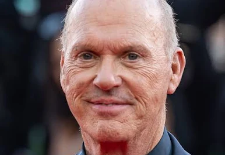
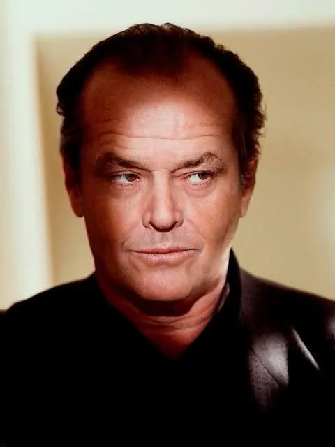
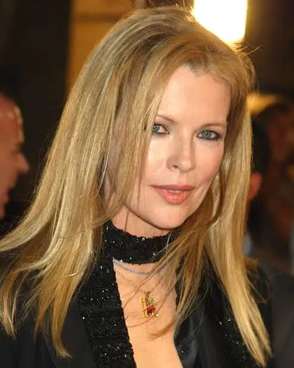
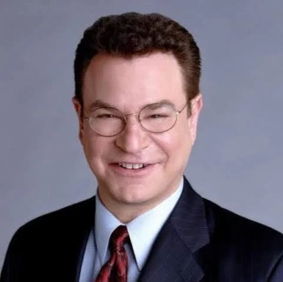
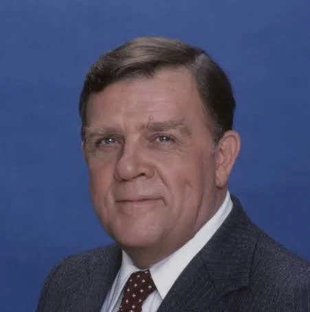
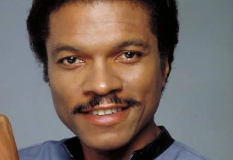
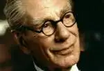
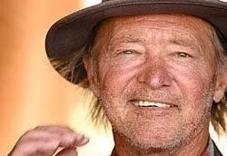

Майкл Кітон: — Брюс Вейн / Бетмен 
Джек Ніколсон: — Джокер / Джек Нап'єр 
Кім Бейсінгер: — Вікі Вейл 
Роберт Вул: — Александр Нокс 
Пет Гінгл: — Комісар Гордон 
Біллі Ді Вільямс: — Харві Дент 
Майкл Гоф: — Альфред 
Трейсі Волтер: — Боб-Блазень 